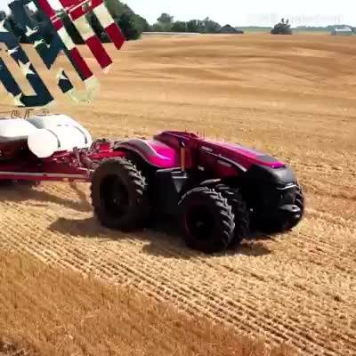

回复@青年人与卫生标兵:我愿意，管着吗你，就每天发，气死你//@青年人与卫生标兵:所以呢，这点技俩很牛吗，偶尔一发也就算了，每天都有这么一条，是不是把自己定位为a股韭菜的启蒙教父了？@ETF拯救世界:今天涨跌家数1:2，继续新高。昨天沪深300跌，新高。今天中证500跌，又新高……
回复@很多话不想说:没有农民。那两个人中一个叫农场主，身家几千万美刀吧。另一个是雇的长工……一会我把当时拍的照片发上来//@很多话不想说:我也很想那么幸福地做农民@智慧科技迷:无人驾驶农业机械，未来的农业科技。以后最幸福的职业非农民莫属#制造业强国##农业科技# 工业科技迷的秒拍视频  6万次播放 01:37
这个十年前就在美国的农场见过了。机器上带GPS，会自动掉头。老大一个农场就两个人工作。还养几百头牛……有时候效率低收入少的人太多没什么意义。//@佐罗_厚恩投资:转发微博@智慧科技迷:无人驾驶农业机械，未来的农业科技。以后最幸福的职业非农民莫属#制造业强国##农业科技# 工业科技迷的秒拍视频 6万次播放 01:37